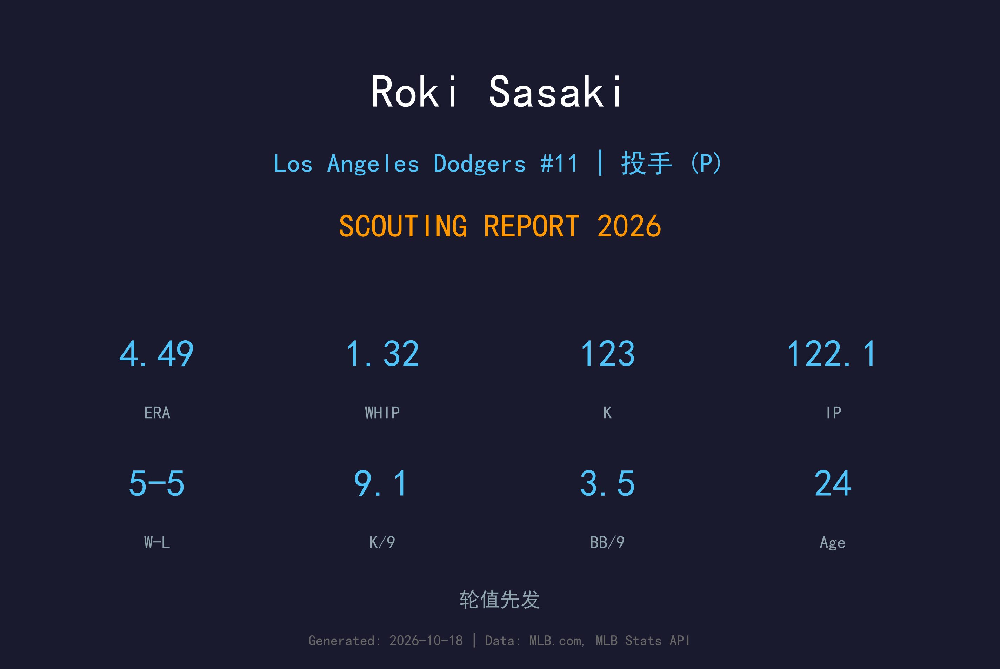
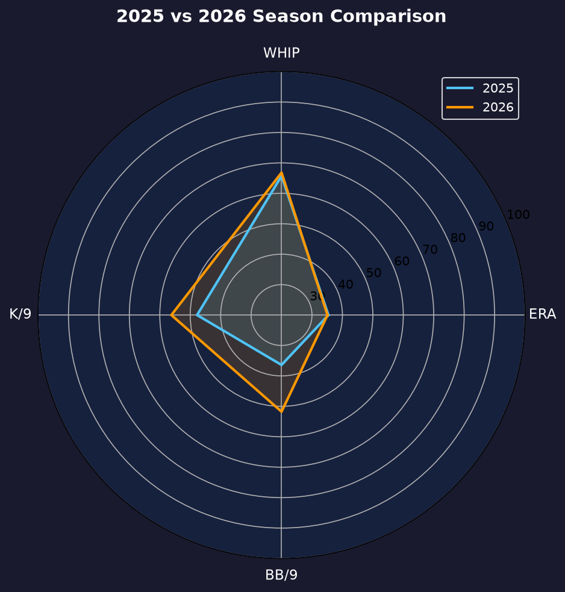
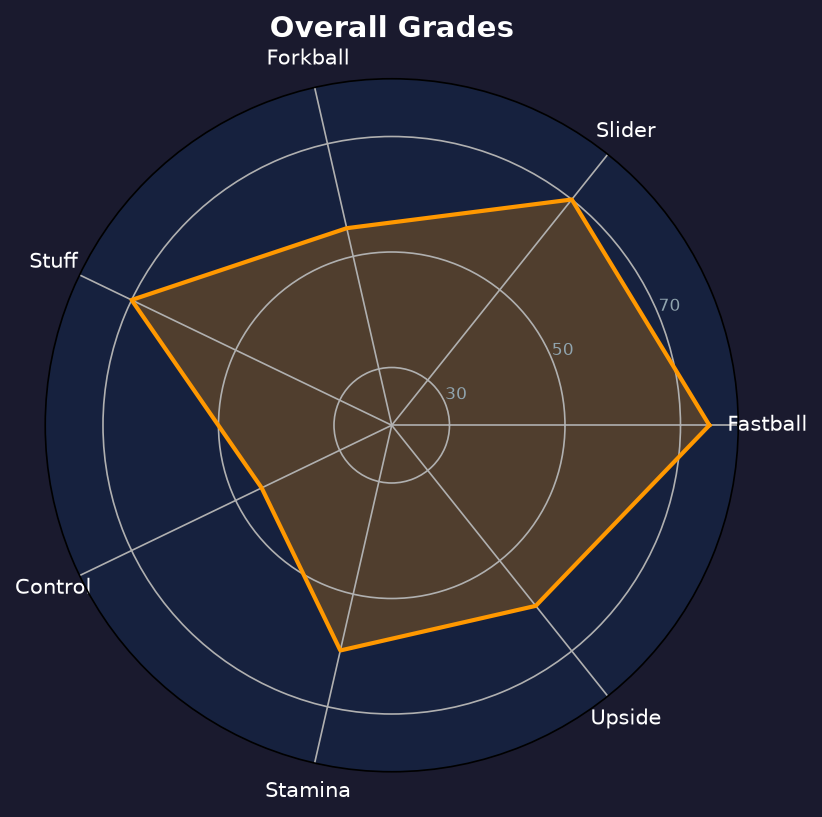

Los Angeles Dodgers #11 | 先发投手 | 右投 / 右打 | 令和怪物二世

佐佐木朗希是2025年加盟道奇的日本超级新秀，以 100mph 速球与"绝浮游球"滑球闻名的令和怪物二世。他的天赋让全联盟垂涎，但 MLB 适应期比预期更颠簸。
2026年他26场出赛（23场先发），缴出5胜5败、4.49 ERA、1.32 WHIP，122.1局123次三振。三振率 9.05 K/9 显示 stuff 仍是顶级，但 48次保送与22支被全垒打让他的 ERA 始终居高不下。
24岁的 Sasaki 远未达到上限。他的速球速度与滑球位移都是联盟前1%的天赋，需要修正的是配球智慧与 MLB 打者的耐心应对。道奇对他有无限耐心——这位令和怪物二世的爆发，可能只是时间问题。
19岁投出 NPB 史上第16场完全比赛，13K 0BB，震惊日本棒球界。
单场比赛连续13次三振，打破日本职业棒球纪录，"令和怪物"之名传遍全球。
通过入札制度与道奇签约，与大谷、山本组成令和日本帮。

| 赛季 | G | GS | W-L | ERA | IP | SO | BB | WHIP |
|---|---|---|---|---|---|---|---|---|
| 2025 | 10 | 8 | 1-1 | 4.46 | 36.1 | 28 | 22 | 1.43 |
| 2026 | 26 | 23 | 5-5 | 4.49 | 122.1 | 123 | 48 | 1.32 |
工作量从36.1局暴增至122.1局，WHIP 微降但 ERA 持平——stuff 撑住了局数，但被打者与保送的双重压力未解。
主战球种，占全部配球的 42.0%，均速 97.9 mph。直上直下的四缝线速球，负责抢好球数与建立球数领先，是所有配球的基准。
常用武器，占全部配球的 29.2%，均速 90.2 mph。快速指叉球下坠时机晚，与速球搭配形成致命速差。
常用武器，占全部配球的 21.6%，均速 86.6 mph。传统滑球横向位移锐利，是两好球后的主要挥空武器。
辅助配球，占全部配球的 7.2%，均速 85.3 mph。指叉球下坠幅度大，是主要的出局球之一。
9.05 K/9 的三振率证明他的球路依然是联盟前列，但 3.53 BB/9 的保送率让他的投球局数经常陷入球数战。MLB 打者比 NPB 更耐心，会逼使他投出更多坏球，这是他从日本到美国后最大的适应课题。
22支被全垒打是 1.62 HR/9，这个数字在道奇轮值中仅次于伤病的 Glasnow。他的速球太快、打者来不及反应，但当他滑球失准或陷入 deep count 时， MLB 打者会毫不犹豫地锁定他的失误球。
5胜5败、122.1局，这不算一个成功的赛季，但绝对是一个"学习曲线陡峭"的赛季。他从36局的小样本工具人变成了23场的全职先发，workload 暴增但效率仅微降。道奇对他的耐心是无限的——他的天赋天花板仍是轮值最高。

天赋天花板的待雕璞玉，道奇愿意等
B+ 级 / 高天赋成长期
道奇 2026 季后赛战绩：NLDS 3-1 晋级、NLCS 0-4 止步。
| G | IP | ERA | WHIP | SO | BB | H | HR |
|---|---|---|---|---|---|---|---|
| 3 | 3.1 | 2.70 | 1.50 | 2 | 3 | 2 | 0 |
佐佐木朗希的2027赛季是" breakout 或 bust"的关键年。他需要把保送率压到 3.0 以下、被全垒打减半，才能真正兑现令和怪物二世的天赋。道奇的投手开发组已为他制定详细的配球与心理训练计划。
2026：5-5、4.49 ERA、122IP——workload 暴增的适应年
2027：目标 ERA 3.80 以下、BB/9 ≤3.0、首次 150K
2028+：若控球成熟，有望挑战赛扬奖并接班山本成为道奇轮值头牌
佐佐木朗希出生于日本岩手县奥州市——与大谷翔平同乡。高中时期就以 160km/h 速球闻名，2020年被千叶罗德海洋第一指名。2022年，19岁的他投出 NPB 史上第16场完全比赛，2023年更创下连续13K 的日本纪录。
2025年，他通过入札制度加盟洛杉矶道奇，与大谷翔平、山本由伸组成令和日本帮。他的加盟被日本媒体称为"平成最后的怪物遇到令和最强的怪物"。
场外的 Sasaki 以冷静与自律著称。他的偶像是前辈大谷，两人时常在赛前交流投球心得。他的 MLB 之路虽比预期颠簸，但他的天赋仍让全联盟保持警惕。